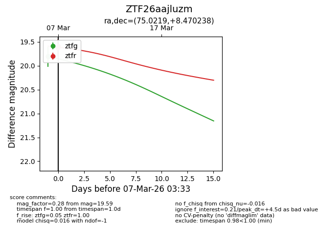
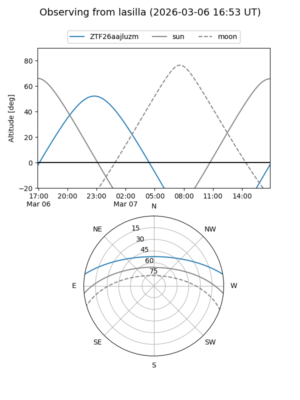
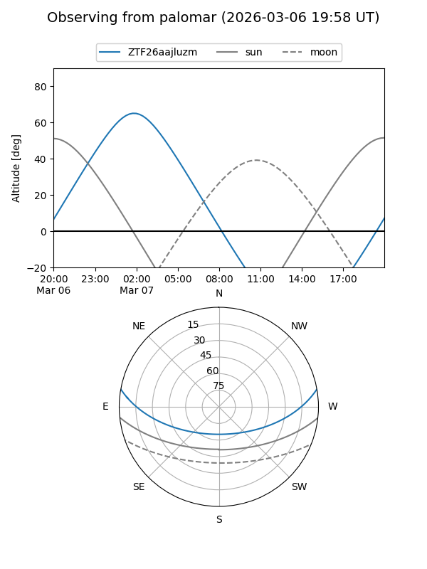
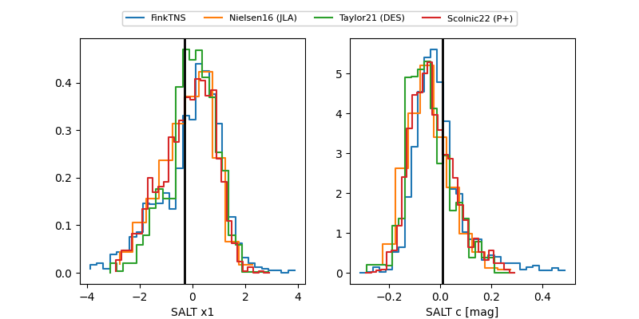

ZTF26aajluzm
Target ZTF26aajluzm at 2026-03-07 03:34
Aliases and brokers:
FINK: link
Lasair: link
ALeRCE: link
alt names
ZTF26aajluzm (ztf,fink_ztf)
Coordinates:
equatorial (ra, dec) = 75.0219,+8.47024
equatorial (HMS+DMS) = 05:00:05.24,+08:28:12.86
galactic (l, b) = (191.5924,-20.11454)
Flags:
Photometry:
last ztfg=19.81, ztfr=19.59
2 ztfg, 2 ztfr detections
Lightcurve

Visibility


Additional plots
